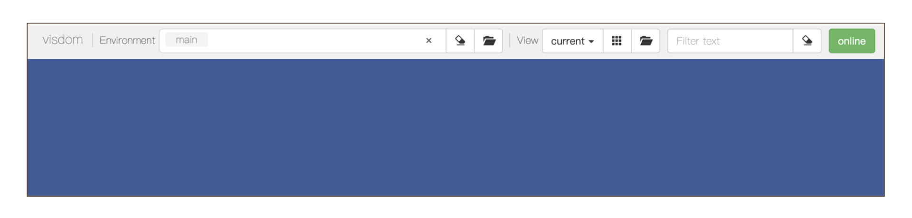

- 00 开篇词 如何高效入门PyTorch？.md.html
- 01 PyTorch：网红中的顶流明星.md.html
- 02 NumPy（上）：核心数据结构详解.md.html
- 03 NumPy（下）：深度学习中的常用操作.md.html
- 04 Tensor：PyTorch中最基础的计算单元.md.html
- 05 Tensor变形记：快速掌握Tensor切分、变形等方法.md.html
- 06 Torchvision（上）：数据读取，训练开始的第一步.md.html
- 07 Torchvision（中）：数据增强，让数据更加多样性.md.html
- 08 Torchvision（下）：其他有趣的功能.md.html
- 09 卷积（上）：如何用卷积为计算机“开天眼”？.md.html
- 10 卷积（下）：如何用卷积为计算机“开天眼”？.md.html
- 11 损失函数：如何帮助模型学会“自省”？.md.html
- 12 计算梯度：网络的前向与反向传播.md.html
- 13 优化方法：更新模型参数的方法.md.html
- 14 构建网络：一站式实现模型搭建与训练.md.html
- 15 可视化工具：如何实现训练的可视化监控？.md.html
- 16 分布式训练：如何加速你的模型训练？.md.html
- 17 图像分类（上）：图像分类原理与图像分类模型.md.html
- 18 图像分类（下）：如何构建一个图像分类模型_.md.html
- 19 图像分割（上）：详解图像分割原理与图像分割模型.md.html
- 20 图像分割（下）：如何构建一个图像分割模型？.md.html
- 21 NLP基础（上）：详解自然语言处理原理与常用算法.md.html
- 22 NLP基础（下）：详解语言模型与注意力机制.md.html
- 23 情感分析：如何使用LSTM进行情感分析？.md.html
- 24 文本分类：如何使用BERT构建文本分类模型？.md.html
- 25 摘要：如何快速实现自动文摘生成？.md.html
- 加餐 机器学习其实就那么几件事.md.html
- 用户故事 Tango：师傅领进门，修行在个人.md.html
- 答疑篇 思考题答案集锦.md.html
- 结束语 人生充满选择，选择与努力同样重要.md.html
- 捐赠
15 可视化工具：如何实现训练的可视化监控？
你好，我是方远。欢迎来到第15节课的学习。
上节课中，我们以线性回归模型为例，学习了模型从搭建到训练的全部过程。在深度学习领域，模型训练是一个必须的环节，而在训练过程中，我们常常需要对模型的参数、评价指标等信息进行可视化监控。
今天我们主要会学习两种可视化工具，并利用它们实现训练过程的可视化监控。
在TensorFlow中，最常使用的可视化工具非Tensorboard莫属，而TensorboardX工具使得PyTorch也享受到Tensorboard的便捷功能。另外，FaceBook也为PyTorch开发了一款交互式可视化工具Visdom，它可以对实时数据进行丰富的可视化，帮助我们实时监控实验过程。
让我们先从TensorboardX说起。
TensorboardX
Tensorboard是TensorFlow的一个附加工具，用于记录训练过程的模型的参数、评价指标与图像等细节内容，并通过Web页面提供查看细节与过程的功能，用浏览器可视化的形式展现，帮助我们在实验时观察神经网络的训练过程，把握训练趋势。
既然Tensorboard工具这么方便，TensorFlow外的其它深度学习框架自然也想获取Tensorboard的便捷功能，于是，TensorboardX应运而生。
安装
安装 Tensorboard很容易，我们可以使用pip进行安装，命令如下：
pip install tensorboard
如果你已经安装过TensorFlow，那么就无需额外安装Tensorboard了。
接下来，我们需要安装 TensorboardX。这里需要注意的是，PyTorch 1.8之后的版本自带TensorboardX，它被放在torch.utils.tensorboard中，因此无需多余配置。
如果你用的是PyTorch 1.8之前的版本，TensorboardX安装起来也非常简单。我们依然使用pip命令安装：
pip install tensorboardX
使用与启动
为了使用TensorboardX，我们首先需要创建一个SummaryWriter的实例，然后再使用add_scalar方法或add_image方法，将数字或图片记录到SummaryWriter实例中。
SummaryWriter类的定义如下：
torch.utils.tensorboard.writer.SummaryWriter(log_dir=None)
其中的log_dir表示保存日志的路径，默认会保存在“runs/当前时间_主机名”文件夹中。
实例创建好之后，我们来看add_scalar方法，这个方法用来记录数字常量，它的定义如下：
add_scalar(tag, scalar_value, global_step=None, walltime=None)
根据定义，我们依次说说其中的参数：
- tag：字符串类型，表示数据的名称，不同名称的数据会使用不同曲线展示；
- scalar_value：浮点型，表示要保存的数值；
- global_step：整型，表示训练的step数；
- walltime：浮点型，表示记录发生的时间，默认为time.time()。
我们一般会使用add_scalar方法来记录训练过程的loss、accuracy、learning rate等数值的变化，这样就能直观地监控训练过程。
add_image方法用来记录单个图像数据（需要Pillow库的支持），它的定义如下：
add_image(tag, img_tensor, global_step=None, walltime=None, dataformats='CHW')
tag、global_step和walltime的含义跟add_scalar方法里一样，所以不再赘述，我们看看其他新增的参数都是什么含义。
- img_tensor：PyTorch的Tensor类型或NumPy的array类型，表示图像数据；
- dataformats：字符串类型，表示图像数据的格式，默认为“CHW”，即Channel x Height x Width，还可以是“CHW”、“HWC”或“HW”等。
我们来看一个例子加深理解，具体代码如下。
from torch.utils.tensorboard import SummaryWriter
# PyTorch 1.8之前的版本请使用：
# from tensorboardX import SummaryWriter
import numpy as np
# 创建一个SummaryWriter的实例
writer = SummaryWriter()
for n_iter in range(100):
writer.add_scalar('Loss/train', np.random.random(), n_iter)
writer.add_scalar('Loss/test', np.random.random(), n_iter)
writer.add_scalar('Accuracy/train', np.random.random(), n_iter)
writer.add_scalar('Accuracy/test', np.random.random(), n_iter)
img = np.zeros((3, 100, 100))
img[0] = np.arange(0, 10000).reshape(100, 100) / 10000
img[1] = 1 - np.arange(0, 10000).reshape(100, 100) / 10000
writer.add_image('my_image', img, 0)
writer.close()
我给你梳理一下这段代码都做了什么。
首先创建一个SummaryWriter的实例，这里注意，PyTorch 1.8之前的版本请使用“from tensorboardX import SummaryWriter”，PyTorch 1.8之后的版本请使用“from torch.utils.tensorboard import SummaryWriter”。
然后，我们随机生成一些随机数，用来模拟训练与预测过程中的Loss和Accuracy，并且用add_scalar方法进行记录。最后生成了一个图像，用add_image方法来记录。
上述代码运行后，会在当前目录下生成一个“runs”文件夹，里面存储了我们需要记录的数据。
然后，我们在当前目录下执行下面的命令，即可启动Tensoboard。
tensorboard --logdir=runs
启动后，在浏览器中输入“http://127.0.0.1:6006/”（Tensorboard的默认端口为6006），即可对刚才我们记录的数据进行可视化。
Tensorboard的界面如下图所示。图片中右侧部分就是刚刚用add_scalar方法记录的Loss和Accuracy。你看，Tensorboard已经帮我们按照迭代step绘制成了曲线图，可以非常直观地监控训练过程。
在“IMAGES”的标签页中，可以显示刚刚用add_image方法记录的图像数据，如下图所示。
训练过程可视化
好，进行到这里，我们已经装好了TensorboardX并启动，还演示了这个工具如何使用。
那么如何在我们实际的训练过程中来进行可视化监控呢？我们用上节课构建并训练的线性回归模型为例，来进行实践。
下面的代码上节课讲过，作用是定义一个线性回归模型，并随机生成训练集X与对应的标签Y。
import random
import numpy as np
import torch
from torch import nn
# 模型定义
class LinearModel(nn.Module):
def __init__(self):
super().__init__()
self.weight = nn.Parameter(torch.randn(1))
self.bias = nn.Parameter(torch.randn(1))
def forward(self, input):
return (input * self.weight) + self.bias
# 数据
w = 2
b = 3
xlim = [-10, 10]
x_train = np.random.randint(low=xlim[0], high=xlim[1], size=30)
y_train = [w * x + b + random.randint(0,2) for x in x_train]
然后我们在训练的过程中，加入刚才讲过的SummaryWriter实例与add_scalar方法，具体的代码如下。
# Tensorboard
from torch.utils.tensorboard import SummaryWriter
# 训练
model = LinearModel()
optimizer = torch.optim.SGD(model.parameters(), lr=1e-4, weight_decay=1e-2, momentum=0.9)
y_train = torch.tensor(y_train, dtype=torch.float32)
writer = SummaryWriter()
for n_iter in range(500):
input = torch.from_numpy(x_train)
output = model(input)
loss = nn.MSELoss()(output, y_train)
model.zero_grad()
loss.backward()
optimizer.step()
writer.add_scalar('Loss/train', loss, n_iter)
通过上面这段代码，我们记录了训练过程中的Loss的变换过程。具体的趋势如下图所示。
可以看到Loss是一个下降的趋势，说明随着训练过程，模型越来越拟合我们的训练数据了。进行到这里，我们已经走完了利用TensorboardX工具，实现训练可视化监控的整个过程。
TensorboardX除了包括上述的常用方法之外，还有许多其他方法如add_histogram、add_graph、add_embedding、add_audio 等，感兴趣的同学可以参考[官方文档]。相信参考已经学习过的两个add方法，你一定能够举一反三，很快熟练调用其它的方法。
Visdom
Visdom是Facebook开源的一个专门用于PyTorch的交互式可视化工具。它为实时数据提供了丰富的可视化种类，可以在浏览器中进行查看，并且可以很容易地与其他人共享可视化结果，帮助我们实时监控在远程服务器上进行的科学实验。
安装与启动
Visdom的安装非常简单，可直接使用pip进行安装，具体的命令如下：
pip install visdom
执行安装命令后，我们可以执行以下命令启动Visdom：
python -m visdom.server
Visdom的默认端口是8097，如果需要修改，可以使用-p选项。
启动成功后，在浏览器中输入“http://127.0.0.1:8097/”，进入Visdom的主界面。
Visdom的主界面如下图所示。

请你注意，Visdom的使用与Tensorboard稍有不同。Tensorboard是在生成记录文件后，启动可视化界面。而Visdom是先启动可视化界面，当有数据进入Visdom的窗口时，会实时动态地更新并绘制数据。
快速上手
下面我们就来动手试一下，看看Visdom如何绘制数据。
具体过程分四步走：首先，我们需要将窗口类Visdom实例化；然后，利用line()方法创建一个线图窗口并初始化；接着，利用生成的一组随机数数据来更新线图窗口。最后，通过image()方法来绘制一张图片。
上述过程的具体代码如下。
from visdom import Visdom
import numpy as np
import time
# 将窗口类实例化
viz = Visdom()
# 创建窗口并初始化
viz.line([0.], [0], win='train_loss', opts=dict(title='train_loss'))
for n_iter in range(10):
# 随机获取loss值
loss = 0.2 * np.random.randn() + 1
# 更新窗口图像
viz.line([loss], [n_iter], win='train_loss', update='append')
time.sleep(0.5)
img = np.zeros((3, 100, 100))
img[0] = np.arange(0, 10000).reshape(100, 100) / 10000
img[1] = 1 - np.arange(0, 10000).reshape(100, 100) / 10000
# 可视化图像
viz.image(img)
可以看出，使用过程与Tensorboard基本一致，只是函数调用上的不同。- 绘制线图的结果如下图所示。
对应的绘制图片结果如下。可以看出，Visodm绘制数据时，是动态更新的。
训练可视化监控
同样地，我们学习可视化工具的使用主要是为了监控我们的训练过程。我们还是以构建并训练的线性回归模型为例，来进行实践。
Visdom监控训练过程大致分为三步：
- 实例化一个窗口；
- 初始化窗口的信息；
- 更新监听的信息。
定义模型与生成训练数据的过程跟前面一样，我就不再重复了。在训练过程中实例化并初始化Visdom窗口、实时记录Loss的代码如下。
# Visdom
from visdom import Visdom
import numpy as np
# 训练
model = LinearModel()
optimizer = torch.optim.SGD(model.parameters(), lr=1e-4, weight_decay=1e-2, momentum=0.9)
y_train = torch.tensor(y_train, dtype=torch.float32)
# 实例化一个窗口
viz = Visdom(port=8097)
# 初始化窗口的信息
viz.line([0.], [0.], win='train_loss', opts=dict(title='train loss'))
for n_iter in range(500):
input = torch.from_numpy(x_train)
output = model(input)
loss = nn.MSELoss()(output, y_train)
model.zero_grad()
loss.backward()
optimizer.step()
# 更新监听的信息
viz.line([loss.item()], [n_iter], win='train_loss', update='append')
在Visdom的界面中，我们可以看到Loss的变化趋势如下图所示。Visdom不会像Tensorboard自动对曲线进行缩放或平滑，因此可以看到50轮之后，由于Loss值变化范围比较小，图像的抖动趋势被压缩得非常不明显。
小结
这节课我带你学习了两种可视化工具：TensorboardX和Visdom。
相信通过一节课的讲解和练习，这两种可视化工具如何安装、启动，还有如何用它们绘制线图和图片这些基本的操作，相信你都已经掌握了。
学习使用可视化工具的主要目的，是为了帮助我们在深度学习模型的训练过程中，实时监控一些数据，例如损失值、评价指标等等。对这些数据进行可视化监控，可以帮助我们感知各个参数与指标的变化，实时把握训练趋势。因此，如何将可视化工具应用于模型训练过程中，是我们学习的重点。
TensorboardX和Visdom还有其它诸如绘制散点图、柱状图、热力图等等多种多样的功能，如果你感兴趣，可以参考官方文档，类比我们今天学习的方法动手试一试，经过练习，一定可以熟练使用它们。
每课一练
参考Visdom快速上手中的例子，现在需要生成两组随机数，分别表示Loss和Accuracy。在迭代的过程中，如何用代码同时绘制出Loss和Accuracy两组数据呢？
欢迎记录你的思考或疑惑，也推荐你把今天学到的可视化工具分享给更多同事、朋友。
© 2019 - 2023 Liangliang Lee. Powered by gin and hexo-theme-book.